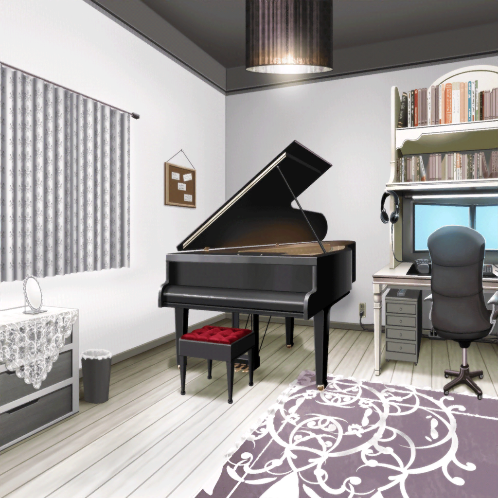
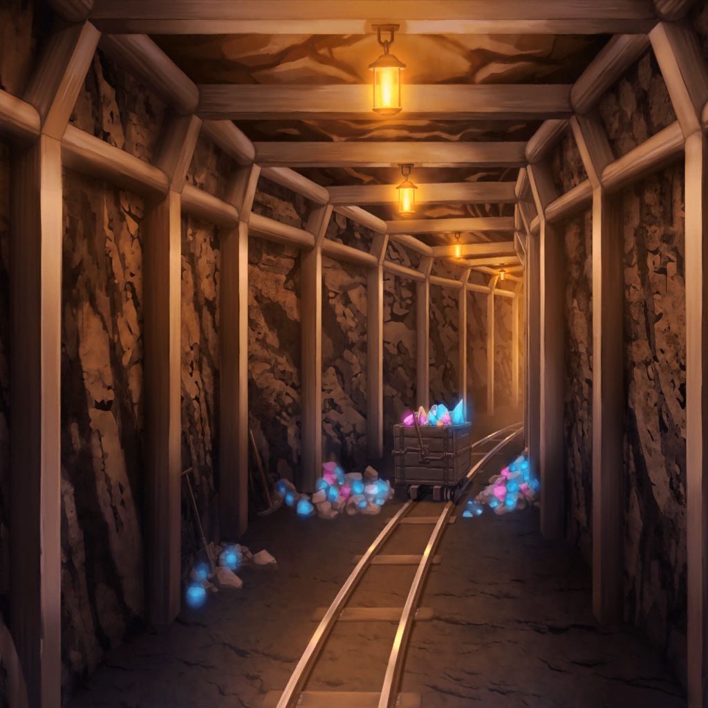

白金家 燐子の部屋
あこ
『もしもーし、聞こえますか〜？
あれ？ もしかして映像出てない？』
燐子
『あ、ちょっと……待ってね。
まだモニターが……これで……どうかな？』

あこ
『やっほーりんりん。見えてる？ 聞こえてる〜？』
燐子
『うん、大丈夫。ちゃんと聞こえてるし……
映像も出てるよ、あこちゃん』
燐子
『このアプリ……すごいね。こんなにクリアで……
おまけに、ほとんどラグなしで……
動画までやり取りできるなんて』
あこ
『あこも、フレンドさんから教えて貰ったんだ！
ゲームするには最適なんだって。
今日はこのまま、映像つきで通話しながらゲームしよ！』
燐子
『うん。じゃあ、今日は……どこのダンジョンにしよっか……？』
あこ
『あこ、ほしい素材があるんだ。
ちょっと前のエリアなんだけど……戻っていい？
『ノッツの炎石』っていう素材なんだけど……』
燐子
『『ノッツの炎石』……それなら、確かロゴロ鉱山……かな？
前に、友希那さん達と一緒に潜ったところ……あっ』
あこ
『……そっか、ロゴロ鉱山……』
燐子
『ご、ごめんね、あこちゃん……』
あこ
『う、ううん！ ぜーんぜん平気！
さっ！ 張り切って素材集めいこー！』

ロゴロ鉱山
聖堕天使あこ姫
よしっ！ 『ノッツの炎石』ドロップ！
やっぱりりんりんと一緒だと、すぐに貯まるね
RinRin
そうかな？ それなら……良かった……
聖堕天使あこ姫
前に来た時は結構迷っちゃったけど、今はマッピングも
終わってるからサクサクだし〜！
友希那さんが歩き回ってくれたおかげ？ なんちゃって！
聖堕天使あこ姫
……
RinRin
……あこちゃん……
聖堕天使あこ姫
…………Roselia、どうなっちゃうのかな？
RinRin
……うん……
聖堕天使あこ姫
……次、行こうか
RinRin
（……さっきからずっと……この調子……お互い、ついRoseliaの
話題を出しちゃって……気まずくなって……）
RinRin
（今日のゲーム、なんか……いつもより、楽しくない……な……
まるで……この前の、Roseliaの……練習みたい……）
聖堕天使あこ姫
……ねえりんりん
RinRin
……何？ あこちゃん
聖堕天使あこ姫
あこね、前から思ってたんだけどさ……聞いてくれる？
RinRin
うん、どうしたの？
聖堕天使あこ姫
あのね…………
今戦ってるモンスターなんだけど……友希那さんに似てない？
RinRin
えっ？
RinRin
………………
そういわれると……確かに……
クールで……カッコイイ、感じとか……似てるかも……
聖堕天使あこ姫
でしょー！ りんりんならわかってくれると思ってた！！！
聖堕天使あこ姫
攻撃したあとのプイッてそっぽ向いちゃうモーションとか、
超感じ出てるよねっ！
あとあと、属性が氷っていうのもポイント高いと思う！
聖堕天使あこ姫
ちなみにりんりんは『サイレントドラゴン』って感じ！
かわいいのに超強いところとか、絶対りんりんっぽいよ！
聖堕天使あこ姫
それでねー、リサ姉は『エールエルフ』！
敵味方関係なく回復しちゃうとか、完全にリサ姉でしょ〜！
でね、あこは当然『ダークドラゴン』でー……
RinRin
（やっぱりあこちゃん……Roseliaの、みんなのこと……
よく見てるんだな。みんな……ピッタリ……）
RinRin
（それに、ゲームしてる間……
ずっと、みんなのこと話してる……）
RinRin
……あこちゃん……あこちゃんは本当に、
Roseliaが……大好きなんだね……
聖堕天使あこ姫
それでー、『ダークドラゴン』の
漆黒の翼はピンチになるとー……
ん？ りんりん、今何か言った？
RinRin
……ううん、なんでもないよ。
それで……漆黒の翼は、ピンチになると……？
聖堕天使あこ姫
そう！ それでね、ピンチになると翼の色が
黒から白に変わって、それで属性も――
RinRin
（Roseliaの話をするあこちゃん、すっごく楽しそう……
それに、わたしも……さっきの、
ただゲームをしてた時よりも……楽しい……）
RinRin
（わたしも……あこちゃんと同じように、Roseliaが……）
RinRin
（……やっぱり、今のままじゃ……駄目……
もっと……考えないと……）
RinRin
（すぐには、わからないかもしれないけど……でも……
Roseliaのためにできること……探さなくちゃ。
そのためにも、今は……できることを……精一杯……）
RinRin
……あこちゃん。今日は……とことんやろう
RinRin
足りない素材……全部、集めきっちゃおう……！
聖堕天使あこ姫
えっ？ い、いいけど……珍しいね？
いつもは、そろそろやめにしようって止めるのに……
RinRin
できるときに……できることを、精一杯……やらなくちゃ
聖堕天使あこ姫
……そっか……うん、そうだよね。
わかった！ 今のうちに、少なくなった素材も集めなおそうっ！
RinRin
うん。一緒に……頑張ろうね、あこちゃん